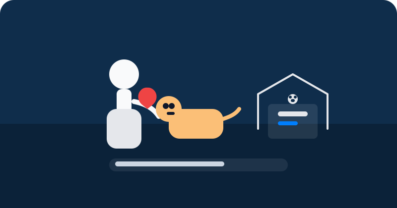

Championing Compassion: Animal Welfare in Sri Lanka
I volunteer with animal welfare organisations in Sri Lanka, supporting injured, abandoned and lost animals so they can receive the care they deserve. This includes rescue assistance, basic care, helping with treatment, and reuniting pets with their families where possible.
Alongside hands‑on work, I help raise awareness in local communities about responsible pet care and adoption—encouraging people to see animals as family members who deserve safety, dignity and long‑term commitment.